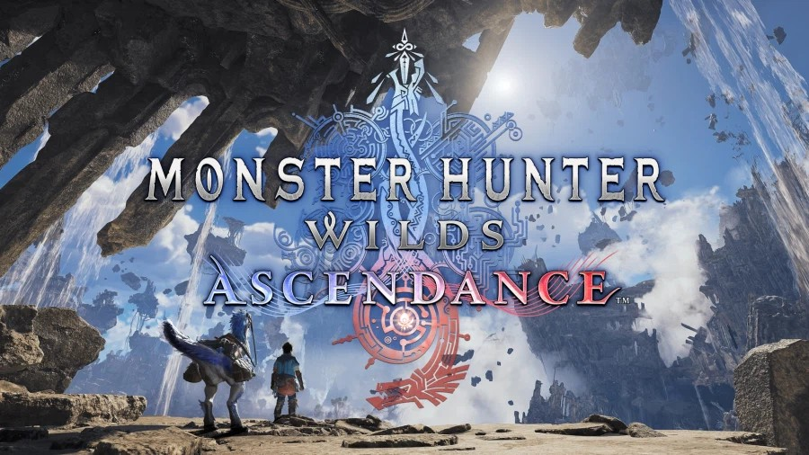

몬스터헌터 와일즈 어센던스 신규 몬스터 정보 뭐가 나왔나, TGS 2026 시연 공개 기준
오늘 9월 16일 밤 11시, 캡콤 공식 방송 '캡콤 스포트라이트｜TGS 2026'에서 몬스터헌터 와일즈의 대규모 확장 DLC '어센던스' 신규 정보가 풀리는데요, 이 글을 정리하고 있는 지금이 딱 그 방송 몇 시간 전이라 저도 살짝 두근두근하면서 그동안 공개된 내용부터 싹 모아봤어요. 도쿄게임쇼(TGS) 2026 현장에서 세계 최초로 플레이어블 시연까지 이미 공개됐으니, 방송 전에 미리 흐름을 잡아두시면 좋을 것 같아요.
오늘 밤 11시 방송 시작하면 그 화면으로 교체할 예정이에요.
몬스터헌터 와일즈 어센던스, TGS에서 뭐가 공개됐나요?
캡콤이 도쿄게임쇼 2026 현장 부스에서 대규모 확장 DLC '어센던스'를 세계 최초로 플레이어블로 출전시켜, 신규 필드 '운거의 유적군'과 비행형 신규 대형 몬스터 토벌 퀘스트를 공개했어요. 시연 퀘스트가 사실 한 종류가 아니라, 운거의 유적군에서 비행형 신규 몬스터를 사냥하는 퀘스트·과거 시리즈에 등장했던 고룡을 토벌하는 퀘스트·몬헌 와일즈를 처음 접하는 분들을 위한 차타카브라 토벌 퀘스트까지 총 세 가지로 구성돼 있다고 하더라고요. 신규 유저 배려까지 같이 챙긴 셈이에요. 게다가 새로운 탈것 '세크레트'를 타고 하늘 위 유적을 자유롭게 누빌 수 있다는 점도 눈에 띄는데요, 지상뿐 아니라 공중까지 무대를 넓혔다는 게 이번 확장의 방향성을 잘 보여주는 것 같아요.
신규 액션 '부스트 브레이서'는 뭔가요?
부스트 브레이서는 팔에 부착해서 무기별로 새로운 액션을 추가하는 신규 장비예요. 이번 확장의 모든 시연 퀘스트에서 부스트 브레이서를 직접 체험할 수 있게 준비됐다고 해요. 무기마다 전용 액션이 따로 붙는 방식이라, 기존에 쓰던 무기라도 완전히 다른 손맛을 느낄 수 있을 것 같더라고요. TGS 현장에 가시는 분이라면 이 부분을 제일 먼저 만져보고 싶으실 것 같아요.
팔에 딱 채우는 디자인이라던데, 실제로 보면 더 멋있을 것 같아요.
신규 몬스터 아라케타·군드라자, 그리고 돌아온 크샬다오라
이번 확장에서 새로 확정된 몬스터는 아라케타·군드라자 두 종이고, 시리즈 대표 고룡 크샬다오라의 등장도 확정됐어요.
- 아라케타 — 무리 지어 하늘을 나는 조류형 몬스터로, 날개에서 뿜는 강한 기류로 장거리를 고속 비행한다고 해요. 무리를 이끄는 개체는 독특한 울음소리로 동료를 지휘한다고 하고요.
- 군드라자 — 폭풍을 다스리는 힘을 지녔다는 신규 고룡으로, 운거의 유적군의 짙은 먹구름 속에서 모습을 드러내는 이번 확장의 핵심 몬스터로 소개됐어요.
- 크샬다오라 — 시리즈를 대표하는 고룡으로, 이전 발표 트레일러에서 이미 등장이 예고됐어요. 다만 이번 TGS 시연에서 정체가 안 풀린 '토벌 대상 고룡'과는 다른 건이고, 정확히 어떤 방식으로 다시 만나게 되는지는 아직 자세히 안 풀렸어요.
크샬다오라 등장은 이번 TGS 시연이 아니라 이전 발표 트레일러에서 이미 공개된 사실이에요. 그러니까 바로 다음에 나올 'TGS 시연에서 정체가 안 풀린 고룡'이랑은 별개 건이니 헷갈리지 않으셨으면 해요 — 크샬다오라 등장 자체는 확정, TGS 토벌 대상 고룡의 정체는 여전히 미공개, 이렇게 나눠서 보시면 정리가 쉬울 것 같아요.
이름부터 낯선 몬스터들이라 실제 모습이 더 궁금해지네요.
근데 비행형 몬스터랑 고룡 정체는요?
정체는 아직 미공개예요 — 오늘 밤 11시 '캡콤 스포트라이트｜TGS 2026' 방송에서 공개될 예정이에요. 앞서 말씀드린 시연 퀘스트 중 운거의 유적군 비행형 신규 몬스터랑 과거 시리즈 고룡 토벌 퀘스트는 실제로 플레이는 가능한데, 정작 그 몬스터들 정체는 여전히 베일에 싸여 있는 상태예요. 이름도 생김새도 아직 확정 발표가 없으니 여기서 섣불리 추측해서 이름을 붙이는 건 안 할게요. 대신 지금까지 공개된 특징만 표로 정리해봤어요.
| 구분 | 지금까지 공개된 특징 | 정체 공개 시점 |
|---|---|---|
| 비행형 신규 대형 몬스터 | 신규 필드 '운거의 유적군'에서 등장, 비행형 | 9월 16일(오늘) 23:00 캡콤 스포트라이트｜TGS 2026 |
| 과거 시리즈 등장 고룡(토벌 대상) | 시리즈에서 이미 등장했던 고룡, 어센던스 두 번째 시연 퀘스트의 토벌 대상 | 9월 16일(오늘) 23:00 캡콤 스포트라이트｜TGS 2026 |
공교롭게도 방송 시간이 이 글을 정리하고 있는 시점이랑 몇 시간 차이밖에 안 나서, 어쩌면 이 글이 올라갈 즈음엔 이미 정체가 풀려 있을 수도 있겠다 싶어요. 확인되는 대로 다시 와서 채워 넣을게요.
TGS 2026은 언제 어디서 열리나요?
TGS 2026은 9월 17일부터 21일까지 일본 치바현 마쿠하리 멧세에서 열려요. 캡콤 부스에서는 어센던스의 세계 최초 플레이어블 시연이 계속 진행되니까, 현지에 가시는 분들은 직접 부스트 브레이서랑 신규 필드를 체험해볼 수 있어요.
발매일이랑 마스터랭크는요?
2027년 출시를 목표로 한다는 건 이미 공개됐지만, 정확한 날짜랑 마스터랭크 세부 내용은 아직 미정이에요. 이전 발표 트레일러에서 "2027년 출시"라는 목표 연도까지는 나왔는데, 정확히 몇 월 며칠인지나 랭크 시스템이 어떻게 바뀌는지는 캡콤이 아직 입을 다물고 있는 상태예요. 여기저기서 짐작성 이야기가 돌 수도 있는데, 구체적인 날짜는 공식 발표 전까지 미정으로 봐 두시는 게 안전할 것 같아요.
제가 느끼는 기대랑 살짝 걱정되는 점
개인적으로는 하늘 위 유적이라는 무대 자체가 정말 기대돼요. 세크레트를 타고 공중을 누비면서 비행형 몬스터를 잡는 그림이 상상만 해도 재밌을 것 같고, 부스트 브레이서로 기존 무기 손맛이 어떻게 바뀔지도 궁금하고요. 다만 발매일이 아직도 안 나왔다는 게 살짝 아쉽긴 해요. 신규 몬스터·필드까지 이렇게 구체적으로 풀렸는데 정작 '언제'가 빠져 있으니, 오늘 밤 방송에서 그 부분까지 조금이라도 힌트가 나와주면 좋겠다 싶더라고요.

하늘 위에 떠 있는 유적이라니, 그림만 상상해도 스케일이 다르네요.
자주 묻는 질문
Q. 몬스터헌터 와일즈 어센던스 신규 몬스터 정보는 언제 공개되나요?
오늘(9월 16일) 밤 11시, '캡콤 스포트라이트｜TGS 2026' 방송에서 비행형 신규 몬스터와 고룡의 정체가 공개될 예정이에요.
Q. TGS 2026에서 어센던스를 직접 플레이해볼 수 있나요?
네, 9월 17일부터 열리는 TGS 2026 캡콤 부스에서 세계 최초 플레이어블 시연이 진행돼요. 신규 액션 부스트 브레이서도 현장에서 체험할 수 있어요.
Q. 어센던스 발매일은 정해졌나요?
2027년 출시를 목표로 한다는 건 이전 발표에서 이미 공개됐지만, 정확한 날짜와 마스터랭크 세부 내용은 이 글을 쓰는 시점까지 미정 상태예요.
Q. 신규 필드 '운거의 유적군'은 어떤 곳인가요?
하늘에 떠 있는 유적 형태의 새로운 필드로, 신규 탈것 세크레트를 타고 자유롭게 탐색할 수 있다고 해요.
오늘 밤 방송에서 비행형 몬스터랑 고룡 정체가 드러나면, 그 내용은 따로 다시 정리해서 들고 올게요. 지금까지 나온 정보만 봐도 기대되는 확장이라, 방송 챙겨보실 분들은 시간 맞춰 캡콤 채널 켜두시면 좋을 것 같아요.
참고한 곳
· 몬스터헌터 와일즈 어센던스 공식 홈페이지
· 캡콤 TGS 2026 공식 페이지
· 루리웹 — 어센던스 2027년 출시 예고 기사